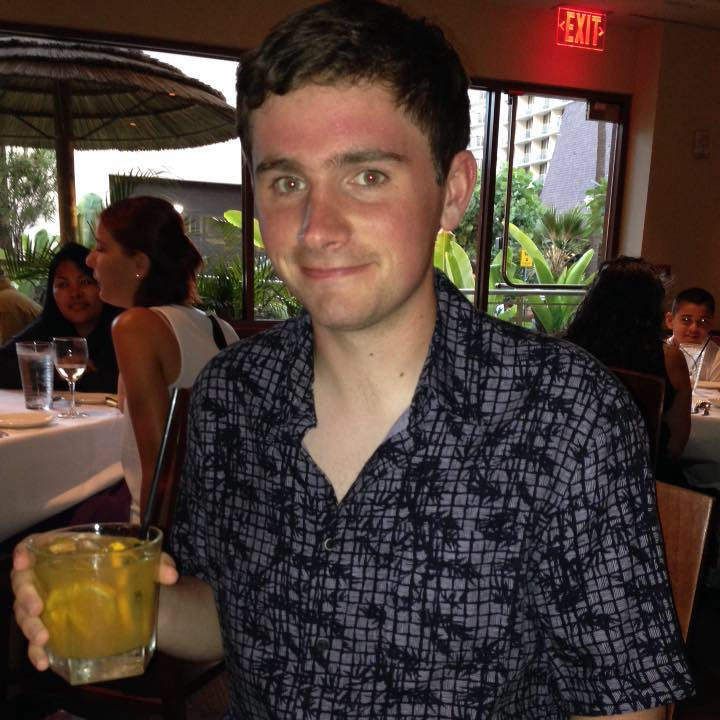

Andrew Schmitt

I'm from originally from Rockville, Maryland (a state many Californians didn't even know existed until meeting me), but I made my way out to the west coast as an intended physics major at UC Berkeley, looking for some new soroundings. That quickly changed when I discovered programming and I haven't looked back. I'm "fluent" in many programming languages and always love learning new languages and frameworks. I've done a lot of frontend web development, with a particular interest in data visualization, but I love backend programming in iOS apps, websites and other software.
In my free time I play soccer and watch a fairly standard amount of netflix (for a college student). If you're interested in my skill set or want to play some pick-up soccer check out my contact info above.